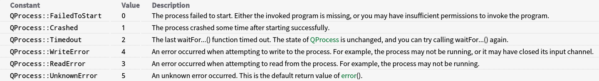
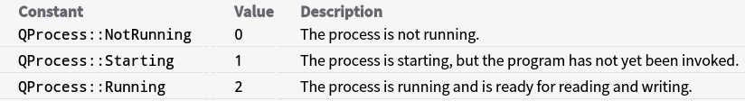

进程的学习
大家都有过这个经历吧，在运行程序时候，程序没有了响应，直接在程序界面上无法关闭，会直接进入任务管理器里面结束掉这个进程。
那么现在问题来了，什么是进程，为什么结束掉了进程就关掉了这个程序了呢？下图是deepin系统下的任务管理器。
首先要了解什么是进程？进程（Process）是计算机中的程序关于某数据集合上的一次运行活动，是系统进行资源分配和调度的基本单位，是操作系统结构的基础。 在早期面向进程设计的计算机结构中，进程是程序的基本执行实体；在当代面向线程设计的计算机结构中，进程是线程的容器。程序是指令、数据及其组织形式的描述，进程是程序的实体（以上是百度百科的解释）。 我的理解就是：一个进程可以认为是一个正在执行的程序。我们可以把进程当做计算机运行时的一个基础单位。同时我们的电脑系统可以同时运行多个程序，说明操作系统都是支持多进程的。
关于如何在操作系统中实现多进程以及进程一些更加深入的了解，这里我就暂时不深入的学习了。我主要学习了在Qt的应用程序中如何启动一个进程，或者在设计应用程序的时候，会把一个与该程序不太相关的功能另外开一个进程运行。
Qt的QProcess类用来启动一个外部程序并与其进行通信。要启动一个进程，可以使用start（）函数，然后将程序名称和运行这个程序所要使用的命令行参数作为该函数的参数。当调用start()函数后,QProcess进入Starting状态，程序运行后QProcess就会进入Running状态并发射started（）信号。进程退出后，QProcess重新进入NotRunning状态并发射finished（）信号。发射的finished（）信号提供了进程的退出代码和退出状态，也可以调用exitCode（）来获取上一个结束进程的退出代码，使用exitStatus（）来获取它的退出状态。任何时间发生了错误，QProcess都会发射error（）信号，也可以调用error（）来查看错误的类型和上次发生的错误。使用status（）可以查看当前进程的状态。
进程的错误： 
进程的状态： 
通过QProcess我们可以简单快速地启动一个进程。下面来写一个例子: 在Qt新建一个继承QMainwindow的GUI工程，在界面上放一个Push Button，然后进入mainwindow.h文件，先添加头文件包含：#include <QProcess>
然后添加一个对象： QProcess myProcess; 然后向Button的单击槽函数中修改如下：
void MainWindow::on_pushButton_clicked()
{
qDebug()<<myprocess.state();
myprocess.start("deepin_music");
qDebug()<<myprocess.state();
}
这样就运行了deepin下的音乐软件，其中status（）可以查看此时进程的状态。
QProcess也提供了一组函数，可以脱离事件循环来使用，它们会挂起调用的线程直到确定的信号被发射： waitForStarted()：阻塞到进程开始 waitForReadyRead()：阻塞到可以从进程的当前读通道读取新的数据 waitForBytesWritten()：阻塞到数据写入进程 waitForFinished()：阻塞到进程结束 需要注意的是，在主线程（调用了QApplication::exec()的线程）调用上面几个函数会让界面失去响应。其实这几个函数我还不是很懂。